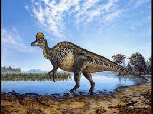

Protoceratops (gr. "primera cara con cuernos") es un género de dinosaurios ceratopsianos protoceratópsidos que vivieron a finales del período Cretácico, hace aproximadamente 75 y 71 millones de años, durante el Campaniense, en lo que hoy es Asia. Su nombre proviene del griego πρωτο proto, "primero", κερατ, cerat, "cuernos" y ωψ, ops, "cara".Forma parte de la familia Protoceratopsidae, un grupo integrado por los primeros dinosaurios con cuernos. A diferencia de los ceratopsianos posteriores careció de cuernos bien desarrollados y conservó algunos rasgos primitivos no vistos en géneros posteriores. Con el tamaño de una oveja, entre 1,5 a 2 metros, este herbívoro fue muy abundante en lo que es hoy Mongolia.
El Protoceratops poseía una gran gola en el cuello, que le habría servido para protegerse, como punto de anclaje de los fuertes músculos de las mandíbulas, para impresionar a los miembros de su especie o para una combinación de estas funciones. Descrito por Walter Granger y W. K. Gregory en 1923, fue considerado en un principio como el ancestro directo de los ceratopsianos norteamericanos. Con el tiempo los investigadores han reconocido a dos especies de Protoceratops andrewsi y Protoceratops hellenikorhinus, basados en parte en sus respectivos tamaños.
En la década de 1920, Roy Chapman Andrews descubrió huevos fosilizados en Mongolia que fueron interpretados como pertenecientes a este dinosaurio, pero que resultaron ser de Oviraptor. Sin embargo, no sería hasta 2011 que se descubrió un nido de Protoceratops genuino, con los restos de los recién nacidos en su interior sugiriendo el cuidado de los padres en este dinosaurio.
El Protoceratops llegó a medir 1,8 metros de largo, con 60 centímetros de alto hasta la cruz,2 y a pesar 60 kilogramos. El gran número de estos animales encontrados en grandes concentraciones hace pensar que vivieron en manadas.Un adulto completamente desarrollado habría pesado aproximadamente 82,7 kilogramos.Los especímenes más pequeños se estiman en 23,7 kilogramos.El gran número de especímenes encontrados en alta concentración sugiere que Protoceratops vivía en manadas.
Protoceratops estaba emparentado con el Leptoceratops, un ceratopsio que habitaba en Norteamérica. Algunas revisiones, como la de Peter Dodson, atribuyen la diferencia de tamaño y forma de algunos huesos craneales, concretamente el parietal y el escamoso, a la existencia de cierto dimorfismo sexual, además de la edad.Su aspecto debió ser intimidatorio a pesar de su relativamente pequeño tamaño, ya que su cabeza estaba protegida por una maciza placa y su boca poseía un afilado pico. La cola tenía una longitud considerable y era gruesa. La reconstrucción del esqueleto indica que este animal era cuadrúpedo. La placa, además de proteger de posibles ataques frontales, probablemente fuera un elemento más del cortejo durante el período de apareamiento. Los músculos de la mandíbula eran prominentes, capaces de realizar una gran fuerza. De esta manera era capaz de arrancar las plantas y hojas de las que se alimentaba. Después masticaba los alimentos con sus hileras de fuertes dientes.
El Protoceratops era un dinosaurio relativamente pequeño con una enorme cabeza. Aunque fue un herbívoro, parece haber tenido una poderosa mordida. Estas mandíbulas tenían grandes baterías de dientes bien adaptados para masticar la vegetación resistente.El cráneo terminaba en un pico frontal muy fuerte y estaba perforada en cuatro pares de fenestras temporales. El primer agujero era las narinas, considerablemente más pequeñas que las vistas en los géneros posteriores. También poseía una órbita ocular grande que medía alrededor de 50 milímetros de diámetro.Detrás de la cavidad ocular presentaba una fosa levemente más pequeña: la «fenestra infratemporal».
Este dinosaurio cuadrúpedo tenía una gola ósea en la parte posterior de la cabeza. La gola, que consiste sobre todo en el hueso parietal y parcialmente en el escamoso, estaba perforada por dos grandes fenestras parietales. En las mejillas sobresalían grandes huesos yugales.El tamaño exacto y la forma de la gola del cuello variaban en cada individuo: algunos especímenes tenían golas cortas y compactas, mientras que otros las tenían de una longitud de casi la mitad del cráneo. Algunos investigadores, incluyendo a Peter Dodson, atribuyen las diferencias de tamaño y forma de los huesos al dimorfismo sexual y a la edad del espécimen.
 |
 |
 |
|
 |
 |